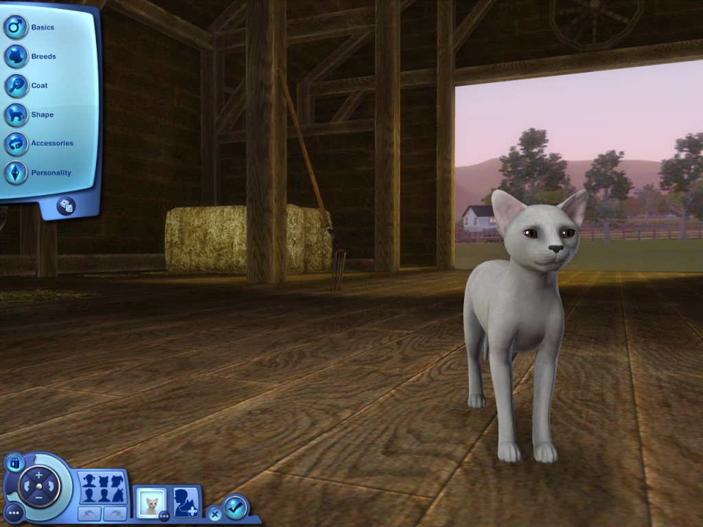
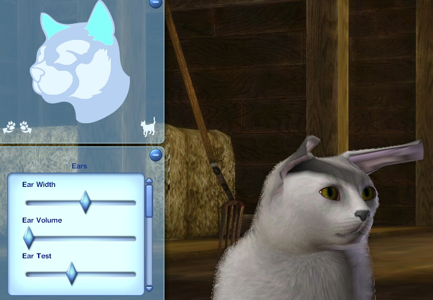

,,Sims 3 Pets aduce emoție și surpriză în viața Sims-ului dvs. cu animale de companie! Creați animalele de companie perfecte (sau imperfecte) pentru Sims-ul dvs., de la câini de pază feroce până la pisoi distructivi, la cai de încredere și multe altele. Cu o varietate de noi activități și interacțiuni sociale, preia controlul direct asupra animalelor de companie ale Sims-ului tău și explorează noi modalități de a te încurca in viața lor. Oferă-le Simsi-lor un nou membru al gospodăriei lor și descoperă moduri cu totul noi de a te juca cu viața!"
Dspre
The Sims 3 Pets este al cincilea pachet de expansiune pentru The Sims 3. Jocul vede o revenire a animalelor de companie din The Sims 2: Pets și The Sims: Unleashed. Pisicile și câinii s-au întors, împreună cu un nou animal: caii. Există, de asemenea, șerpi, țestoase, păsări, rozătoare, șopârle, căprioare și ratoni în versiunea PC / Mac.
Mai multe animale de companie înseamnă mai multă distracție! Creați o mare varietate de câini, pisici și - pentru prima dată - cai unici! Crezi că Sim-ul tău are tot ce trebuie pentru a îmblânzi un cal sălbatic?
Există 46 de rase de pisici, 72 de rase mari de câini, 46 de rase mici de câini și 30 de rase de cai. Jucătorii pot avea un pudel cu părul scurt sau pot avea, de asemenea, un pudel cu pete dalmate.
Jucătorul nu numai că alege modelul dominant, dar poate alege și un model accesoriu; ambele pot fi colorate în orice mod alege jucătorul. La cai, coama și coada sunt independente de culoarea principală a calului.
Jucătorul poate adăuga urme colorate pe blana lor și le poate aluneca oriunde doresc pe corpurile animalelor de companie ale Sims-ului lor! Marcajele sunt, de asemenea, în straturi și pot fi plasate în orice ordine.
Jucătorul poate atribui caracteristici și trăsături animalelor de companie.
Caracteristicile animalelor de companie:
Animalele de companie în vârstă de la Cățeluș / Pisoi / Mânz, până la Adult și Bătrân
Animalele de companie pot fi adoptate fie din adăpost, cât și din alte gospodării care le vând. Simulatorii pot primi și animale de companie rătăcite.
Animalele de companie au propriile dorințe și recompense pe toată durata vieții.
Animalele de companie se pot întâlni, se pot îndrăgosti, se pot reproduce și pot avea arbori genealogici.
Jucătorul are control deplin asupra animalului de companie al unui Sim pentru a-l urmări, săpa, aborda și multe altele.
Animalele de companie pot învăța abilități. Pisicile și câinii pot învăța să vâneze, câinii pot învăța să găsească obiecte de colecție și să aducă Sims la o întâlnire, iar caii pot învăța curse și sărituri.
Nume: introduceți numele și prenumele animalului de companie.
Sex: alegeți masculi sau femele.
Vârstă: alegeți adult sau bătrân.
Rase
Alegeți o rasă. Există 46 de rase de pisici, 46 de rase mici de câini, 72 de rase mari de câini și 30 de rase de cai.

Palton
Culoarea stratului: alegeți din multe straturi presetate diferite sau accesați modul avansat pentru personalizare ulterioară. Alegeți o culoare a stratului din presetările implicite de gri, negru, argintiu, maro deschis și maro sau personalizați prin rotița de culoare.
Formă de blană: alegeți dintr-o varietate de forme de strat implicite sau accesați modul avansat pentru personalizare ulterioară.
Coada: Alegeți între coadă lungă, scurtă sau curbată (pentru câini).
Cai
Culoarea stratului: alegeți din multe straturi presetate diferite sau accesați modul avansat pentru personalizare ulterioară. Alegeți o culoare a stratului din presetările implicite de gri, negru, argintiu, maro deschis și maro sau personalizați prin rotița de culoare.
Coamă: alegeți din 6 coame diferite și schimbați culoarea cu mai multe presetări sau cu rotița de culoare.
Coada: Alegeți dintre 4 cozi diferite și schimbați culoarea cu mai multe presetări sau cu rotița de culoare.
Pene: alegeți să aveți pene pe picioarele calului și selectați lungimea penei.
Formă
Toate următoarele pot fi personalizate în continuare cu modul avansat.
Corp complet: alegeți dintre mai multe forme implicite ale corpului complet.
Corp: alegeți dintre mai multe forme implicite ale corpului.
Cap: alegeți dintre mai multe forme implicite ale capului.

Ochi: alegeți dintre mai multe forme implicite ale ochilor. Selectați dintre câteva culori prestabilite pentru ochi sau setați culoarea ochilor pentru ochi individuali.
Bot: alegeți din mai multe forme diferite ale botului. Schimbați culoarea nasului folosind glisorul.
Urechi: alegeți din mai multe forme de urechi diferite.
Accesorii
Alegeți un guler (opțional). Există 36 de gulere atât pentru pisici, cât și pentru câini.
Călărie: alegeți o căpăstru. Există 9 căpăstru. Alege o șa. Există 21 de șei. Alegeți alte accesorii (opțional). Există 15 accesorii.
Conducător: alegeți o căpăstru. Există 9 căpăstru.
Personalitate
Trăsături: alegeți până la trei trăsături pentru animalul de companie.
Vocea: reglați tonul vocii animalului de companie.